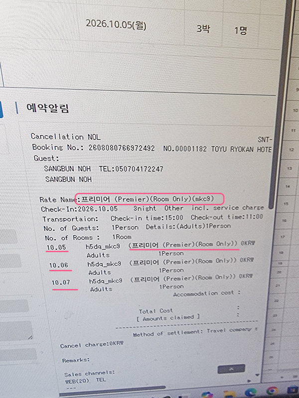

TL린칸(TL-Lincoln, 티엘린칸) 사용하기
TL린칸은 호텔 예약 관련 매니저의 한 프로그램이다.
아고다·익스피디아·야놀자·부킹닷컴 같은 OTA 예약을 한 화면에서 통합 관리해 주는 시스템 중 하나이다.
핵심 구분
TL린칸 자체가 객실을 파는 곳이 아니다. 여러 온라인 여행사의 예약을 일괄 관리하고, OTA에 객실 재고와 요금을 동기화하는 채널매니저(Channel Manager)이다.
TL린칸 자체가 객실을 파는 곳이 아니다. 여러 온라인 여행사의 예약을 일괄 관리하고, OTA에 객실 재고와 요금을 동기화하는 채널매니저(Channel Manager)이다.
- OTA는 고객님이 실제로 들어가 호텔을 검색하고 예약하는 판매처.
- TL린칸은 여러 OTA에서 들어오는 예약과 객실 재고·요금을 한곳에서 관리하는 채널매니저.
호텔←TL린칸←여러 OTA←고객
유명 OTA와 역할 이해
| 구분 | OTA | 쉽게 기억하기 |
|---|---|---|
| 국내 | 야놀자 (Yanolja) | 국내 대표 숙박 예약 플랫폼 |
| 국내 | 여기어때 (Yeogi Eottae) | 국내 호텔·펜션·숙소 예약 |
| 국내 | 마이리얼트립 | 여행·호텔·투어 예약 |
| 해외 | Agoda 아고다 | 아시아권에서 매우 많이 사용 |
| 해외 | Booking.com 부킹닷컴 | 세계적으로 큰 호텔 예약 플랫폼 |
| 해외 | Expedia 익스피디아 | 호텔·항공·패키지 |
| 해외 | Trip.com 트립닷컴 | 중국계 글로벌 OTA, 한국에서도 많이 사용 |
| 해외 | Hotels.com 호텔스닷컴 | 호텔 중심 예약 |
| 해외 | Airbnb 에어비앤비 | 호텔보다 숙소·펜션·개인 숙박 중심 |
예를 들면 고객이 아고다에서 예약하면 → 그 예약 정보가 TL린칸으로 들어오고 → 호텔 직원이 TL린칸에서 예약을 확인하는 식이다.
아고다·익스피디아 같은 OTA 채널들이 객실을 팔아주는 영업사원 같은 역할을 한다면, TL린칸은 그 예약·재고·요금을 한 곳에서 정리해 주는 TOOL이라고 이해하면 쉽다.
TL린칸에서 반드시 확인할 항목
- 예약 OTA
- 예약 상품
- 조식 포함 여부 — 특히 중요
- 하드블럭 표시 여부
주의 · TL린칸에 표시된 정보만 보고 최종 판단하면 안 된다.
OTA 유통 시 ‘조식 포함’ 정보 교차 검토
야놀자 → 아고다 등 OTA 간 재유통 과정에서는 조식 포함 정보가 누락되거나 오기재될 수 있다. 따라서 조식 포함 고객 정보의 오류를 막기 위해 반드시 교차 확인한다.
TL린칸 1차 확인예약 경로·날짜·BREAKFAST 표기 여부·객실 수·요금 정상 여부 확인
원본 채널 교차 확인 — 핵심네이버 이메일 로그인 후 검색창에 ‘하드’를 입력하여 해당 예약 완료 메일을 확인하고 교차검토
OTA 예약 플랫폼에서 원본 재확인예: 야놀자 등 실제 예약 채널에서 예약 내용을 다시 확인
조식 포함 여부 최종 확정정보가 충돌하면 고객에게 우선 문의 후 최종 확정안을 예약 시트에 기재
프런트 인수인계·전달미확인 건 또는 변경사항은 다음 시프트 담당자에게 인계하고 구두로도 전달
가장 중요한 것은 2~3번.
OTA 간 재유통으로 조식 정보가 누락되거나 오기재될 수 있으므로, TL린칸만 보지 말고 원본 예약처와 발신처(네이버 이메일 수동 확인), 고객 확인까지 거친다.
OTA 간 재유통으로 조식 정보가 누락되거나 오기재될 수 있으므로, TL린칸만 보지 말고 원본 예약처와 발신처(네이버 이메일 수동 확인), 고객 확인까지 거친다.
“고객님~ 조식 포함 패키지로 예약이 진행되어 있으신데 맞으실까요?”
기억 · 예약이 들어온 OTA 이름 = 실제 상품의 원판매처라고 단순하게 판단하면 안 된다.
하드블럭 예약 확인 업무 정리
1. 하드블럭이란?
아고다·익스피디아 등의 OTA 예약채널에서 판매한 객실 상품을 야놀자 등 다른 OTA가 가져가 다시 판매하는 경우가 있다. 따라서 고객 예약 화면에는 아고다 예약으로 보이더라도 실제로는 야놀자에서 만들어진 조식 포함 상품일 수 있다.
토유에서는 하드블럭 표시를 실무상 조식 포함 패키지 예약 확인 포인트로 본다.
- 하드블럭 = 조식이 포함된 패키지 예약이라고 생각하면 된다.
- 예약 확인 시 객실 예약만 보는 것이 아니라 조식 포함 여부까지 반드시 확인한다.
- 하드블럭은 일정 객실을 미리 확보하고 확약한 물량이므로, 우리 호텔에서 사용하는 실무 의미를 기준으로 기억한다.
쉽게 말하면
보통 여행사나 OTA(야놀자·아고다 같은 판매처)가 호텔과 계약하여 “이 날짜 방 5개는 우리가 판매할 수 있게 미리 빼주세요”라고 하고 확보해두는 것이다. 호텔 방을 여행사가 미리 찜해두는 것이라고 기억하면 쉽다.
보통 여행사나 OTA(야놀자·아고다 같은 판매처)가 호텔과 계약하여 “이 날짜 방 5개는 우리가 판매할 수 있게 미리 빼주세요”라고 하고 확보해두는 것이다. 호텔 방을 여행사가 미리 찜해두는 것이라고 기억하면 쉽다.
2. 예약 확인 시 반드시 체크할 것
- 예약 경로가 어디인지
- 하드블럭 예약인지
- 조식이 포함되어 있는지
주의 · 예약 화면의 OTA 이름만 보고 판단하지 않는다.
실무 고객예약 엑셀시트 작성 전 예약 확인하기
예약을 확인할 때 아래 순서대로 본다.
하드블럭 예약 여부 확인오늘 또는 해당 날짜의 예약 중 하드블럭 예약이 있는지 먼저 확인한다.
TL린칸 확인[예약 관리] 버튼 클릭 → 일반 또는 숙박 날짜 입력 → 예약 구분 확인 → 예약번호 클릭
예약번호 상세 확인예약 고객 이름 → 인원 → 예약 경로 → 투숙일자 및 투숙기간(몇 박 몇 일) → 예약 상품 → 조식 포함 여부 → 인원 여부 순으로 확인하며 일일 엑셀시트와 대조 입력
조식 표기 판별Room Only = 조식 불포함 / Breakfast 표기 = 조식 포함
네이버 이메일 교차확인토유 네이버 이메일 로그인 → 검색창에 ‘하드’ 입력 → 하드블럭 관련 예약 이메일 또는 원본 예약 내용 확인 → 최종 예약 정보 교차검증

토유 노트북 TL린칸 예약 화면에서 고객예약번호 누르면 뜨는 화면/ 분홍색으로 표시한 부분 유념해서 보기
인보이스(Invoice)를 요청하는 고객님 응대
간혹 고객님께서 숙박확인증, 출장·회사 제출용 증빙자료, 숙박 사실 확인 등의 목적으로 인보이스(Invoice)를 요청하시는 경우가 있다. 아래 절차에 따라 작성하고 전달한다.
인보이스 양식 불러오기토유 노트북의 [시작줄] → [검색] → ‘인보이스’ 검색 후 기존 인보이스 양식 또는 기존 작성 자료 불러오기
고객 예약정보 확인 및 작성예약 내역을 확인한 후 고객에게 필요한 정보만 정확하게 기재
기재·제외 정보 고객 확인함께 투숙한 사람의 이름, 방 이름, 예약번호 등은 고객님의 프라이버시와 선호에 따라 포함 또는 제외
최종본 PDF 저장편집 가능한 원본 파일이 아니라 최종본을 PDF 형식으로 저장하고, 문서가 잘리지 않았는지 정상 표시되는지 확인
전달 방법 확인 후 발송휴대전화 또는 이메일 등 고객이 원하는 수령 방법을 확인하고, 연락처·이메일 주소를 정확하게 확인 후 발송
인보이스 준비 시 가장 중요한 원칙
모든 예약정보를 무조건 기재하지 않는다. 고객님이 원하는 정보는 기재하고, 원하지 않는 정보는 제외한다.
모든 예약정보를 무조건 기재하지 않는다. 고객님이 원하는 정보는 기재하고, 원하지 않는 정보는 제외한다.
“어떤 정보까지 기재해드릴까요?”
“제외를 원하시는 정보가 있으실까요?”
“제외를 원하시는 정보가 있으실까요?”
기본 확인 가능 항목
- 고객명
- 투숙 날짜
- 체크인 / 체크아웃 날짜
- 객실 관련 정보
- 예약번호
- 기타 고객이 증빙을 위해 요청한 사항
인보이스: 고객 요청사항 확인 → 필요한 정보만 작성 → 최종 검수 → PDF 저장 → 전달 방법 확인 → 발송